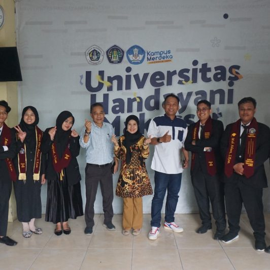

Makassar – Universitas Handayani Makassar kembali menunjukkan komitmennya dalam menerapkan program Merdeka Belajar Kampus Merdeka (MBKM) dengan meluluskan sejumlah mahasiswa tanpa melalui jalur skripsi, melainkan melalui program Magang Riset yang diakui setara dengan tugas akhir.
Program ini menjadi bukti konkret bahwa inovasi pendidikan terus dilakukan untuk menciptakan lulusan yang tidak hanya unggul secara akademik, tetapi juga adaptif terhadap kebutuhan industri dan riset nasional.
Sebanyak delapan mahasiswa dari Program Studi Teknik Informatika berhasil menyelesaikan studi mereka melalui skema ini, dengan menjalani magang riset di dua institusi besar:
Mahasiswa yang menjalani magang riset di BRIN Bandung:
Mahasiswa di Universitas Pembangunan Nasional “Veteran” Jawa Timur:
Program ini memberikan pengalaman praktikal di dunia penelitian sekaligus memperluas jejaring akademik dan profesional mahasiswa, sejalan dengan visi UHM untuk mencetak lulusan unggul dan siap bersaing di tingkat nasional maupun internasional.
Kaprodi Teknik Informatika menyampaikan bahwa keberhasilan ini mencerminkan fleksibilitas dan inovasi kurikulum UHM. “Kami percaya mahasiswa harus diberikan ruang untuk berkembang melalui pengalaman dunia nyata. Ini adalah contoh nyata bahwa riset dapat menjadi media pembelajaran yang setara dengan skripsi,” ujarnya.
UHM berharap keberhasilan ini menjadi inspirasi bagi mahasiswa lainnya serta mendorong institusi pendidikan tinggi lain untuk menerapkan pendekatan serupa dalam mendukung kebijakan MBKM dari Kemendikbudristek RI.
Sumber: SimakBerita.com
← Kembali ke Halaman Informasi